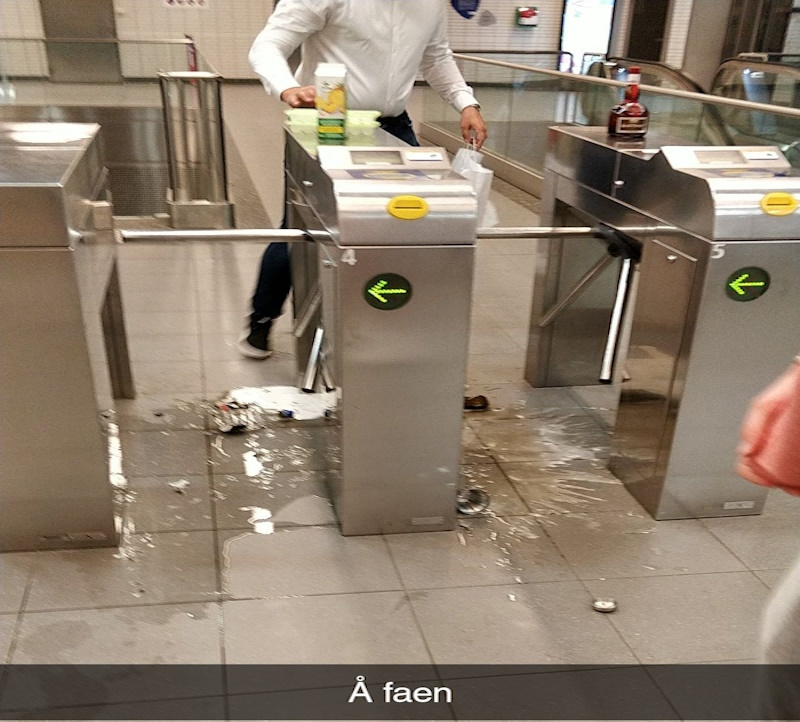
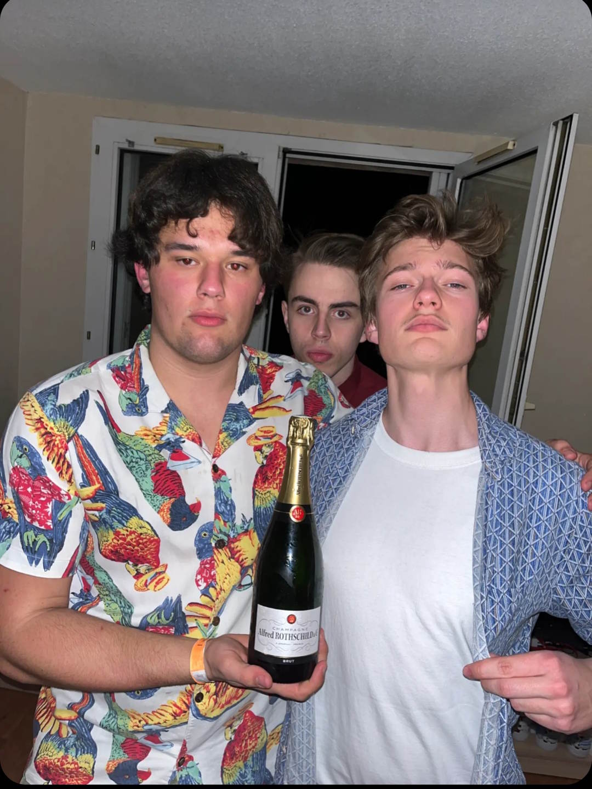
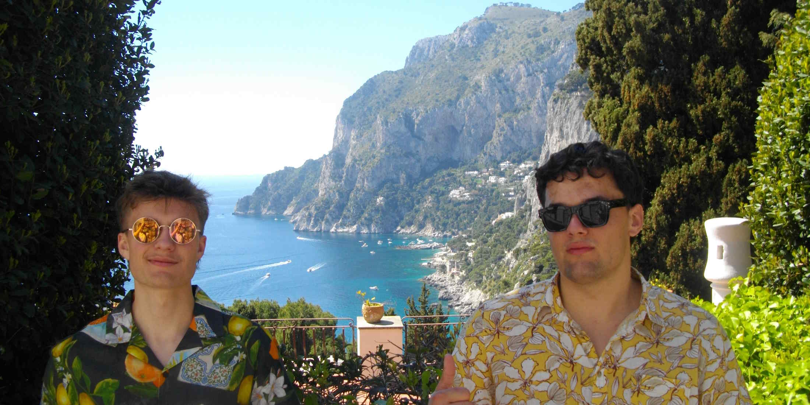

Nasza historia
Wszystko zaczęło się w dniu, w którym chłopaki wyszli na miasto i rozbili litr po litrze alkoholu na podłodze metra.
Około 40 euro mogło zniknąć, ale smak, który powstał, gdy alkohole zmieszały się na brudnej podłodze metra Rangueil, jest punktem wyjścia dla doznań smakowych drinka, który serwujesz dzisiaj.

Dad lore, 2022, Toulouse, Frankrike. Bilde av Andreas N Holmsen © Andreas Holmsen / NoTail fotoavdeling
Czterech chłopców weszło do metra, aby dostać się do wagonów. Śmiali się i żartowali ze sobą, trzymając dużą papierową torbę pełną butelek alkoholu.
Torba była ciężka i mokra od kondensatu, ale nie zdawali sobie sprawy, że słabnie.
Jeden z nich miał właśnie przejść przez bramkę bezpieczeństwa, ale z hukiem torba upadła na ziemię. Butelki roztrzaskały się, a alkohol rozlał się po podłodze, wypełnionej potłuczonym szkłem i silnym zapachem. Ludzie w pobliżu patrzyli z niedowierzaniem, jak czterech chłopców stoi z pustymi rękami i zszokowanymi minami. Szkoda była oczywista: ich wpadka kosztowała około 40 euro.
Jako rozwiązanie zrobili to, co zrobiłby każdy gang chłopców. Posprzątali i wrócili do sklepu. Tym razem z plastikową torbą, jak na studentów inżynierii przystało. To jeden z wielu przypadków, kiedy pokazali, że wszystko, czego potrzeba, to cierpliwość, praktyka i spora ilość pożyczonych pieniędzy.
Przypadek? Raczej nie. Siła wyższa skierowała nas na nową ścieżkę. Ścieżkę wypełnioną napojami.

Business, 2022, Toulouse, Frankrike. Bilde av Andreas N Holmsen © Andreas Holmsen / NoTail fotoavdeling
Tak rozpoczęła się praca nad uwiecznieniem smaku soku z metra poprzez zaokrągloną, precyzyjną mieszankę najlepszych składników i smaków z całej Francji. Nasz zespół podróżował po Europie w poszukiwaniu inspiracji. Zainspirowani klienci to zadowoleni klienci.
Wraz z nowymi smakami powrócili barmani, teraz z jasną wizją tego, jak powinno wyglądać 100 Tours. Zainspirowali się słynnym powiedzeniem „Nie musisz się dobrze bawić, żeby pić alkohol” i jest to bardzo widoczne w ich artystycznym stylu za barem. Artysta musi żyć swoją sztuką, a barman musi pić swojego drinka. Szybko stało się ustaloną praktyką, aby wziąć łyk wszystkich napojów przed ich podaniem: aby upewnić się, że smak jest idealnie skalibrowany.
Ale NoTail to coś więcej niż dwóch facetów, którzy pasjonują się piciem. Chodzi o jedność, społeczność, ideologię, politykę, matematykę, fizykę, chemię, ekonomię, honor, uczciwość, wiedzę i wszystko inne, czego nie można znaleźć poza INSA.

Mad cash, 2023, Toulouse, Frankrike. Bilde av Andreas N Holmsen © Andreas Holmsen / NoTail fotoavdeling
W ten projekt włożono wiele wysiłku. Teraz pozostaje tylko jedno pytanie. Czy pozwolisz tym chłopakom dokończyć drinka samodzielnie? Jedno jest pewne:
Ci faceci zawsze mają coś do zaoferowania, co jest dobre do przełknięcia.